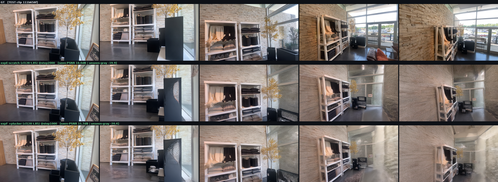
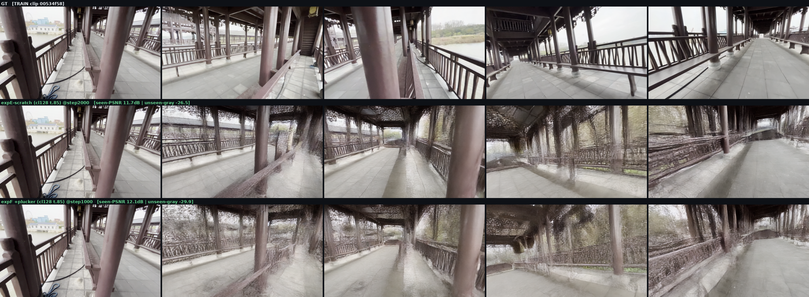
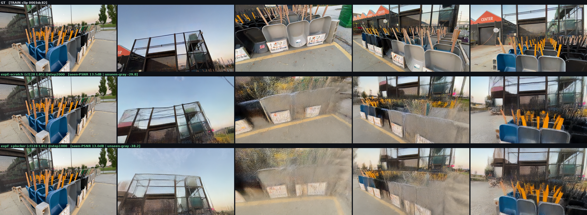
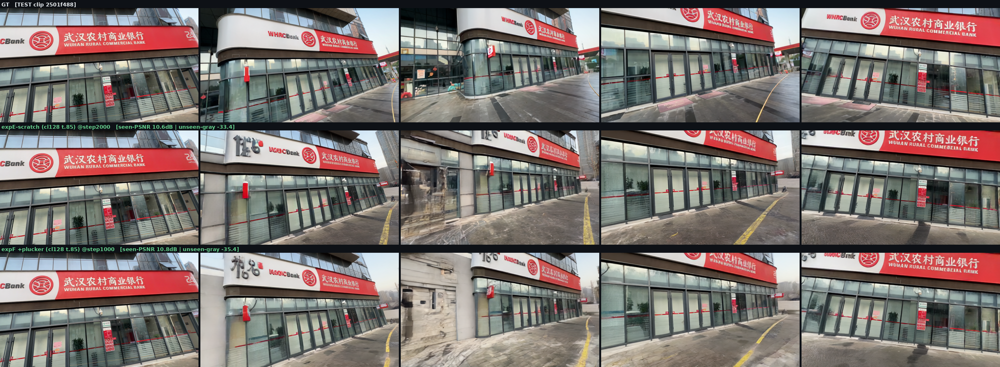

Exp H · 同步起跑采样器(synchronized-start)
动机(用户提出):现行调度里 known token 冻结等待、只广播不倾听,unknown 做结构决策时看到的是半噪 splat。翻转日历 — 所有 token 第 0 步同时起跑、恒速下降 t_i(j)=max(0, τ_i−j/N),先到 0 的 token 做各自的 x0-projection 后钉住成干净参考,unknown 的后半程对着 GT 级邻居做决策。推理侧改动,无需重训(expE field 家族已覆盖钉净+高噪同框的混合场)。
📌 判决:SYNC + τ.85 成为新推理默认。在 legacy 训练的 expE-scratch@1500 上,SYNC t.85 平均 13.10dB vs legacy 12.88(+0.23),TEST 大 clip 上 16.7 vs 16.0(+0.7dB),4 clips 3 胜 1 平,且过剩能量更少(−27.1 vs −30.2,更干净不失内容)。模型甚至没为 sync 场训练过 — sync-trained 双子(expE_sync / expF_sync,已在 8 卡上跑)预计还会拉大。
legacy:错峰起跑 · 同时到终
known 冻结在 τ 直到全局水位降至 τ 才入场;unknown 高-t 结构期看到的 known = 静止的半噪 splat;所有 token 最后一步同时到 0。
SYNC:同时起跑 · 错峰到终(本实验)
全员第 0 步开始下降;τ=0.85 的 token 第 ~20 步到 0 → x0 投影 → 钉住,told-t=0.02,以干净内容持续参与 attention;unknown 每一步看到的 known 都严格更干净。
扫描结果(expE-scratch@1500,cluster-128 场,24 forwards,4-clip 平均)
| 配置 | seen-PSNR | unseen-gray | 逐 clip PSNR(00534f/0003dc/111b65/2501f4) |
|---|
| SYNC τ.85 ⭐ | 13.10 | −27.1 | 12.0 / 13.2 / 16.7 / 10.5 |
| legacy τ.85(旧默认) | 12.88 | −30.2 | 11.7 / 13.2 / 16.0 / 10.6 |
| SYNC τ.65 | 12.73 | −21.1 | 12.0 / 12.3 / 16.3 / 10.3 |
| SYNC τ.45 | 12.58 | −19.4 | 11.9 / 12.0 / 16.0 / 10.4 |
| legacy τ.45 | 12.60 | −24.5 | 12.0 / 11.9 / 16.0 / 10.5 |
解读:日历翻转本身(τ.85 行对比)= 纯赚。把 τ_min 往下放(0.65/0.45)会让 known 自己的低起点纹理问题回归,PSNR 下降 — 所以"同步起跑"有效的机制是中盘给 unknown 干净参考,而不是"让 known 起点更低"。目检:SYNC t.85 深推帧结构最稳、涂抹最少;SYNC t.45 纹理能量最高但结构发飘。
逐 clip 大图(行序:GT / legacy .85 / SYNC .85 / SYNC .65 / SYNC .45 / legacy .45)
TRAIN 00534f58 TRAIN 0003dc82
TRAIN 0003dc82 TEST 111b656f(+0.7dB 的主战场)
TEST 111b656f(+0.7dB 的主战场) TEST 2501f488
TEST 2501f488
附:expF (+Plücker) @1000 首读数(legacy 采样,判决前跑的)
expF@1000 vs expE-scratch@2000(两倍训练量的对手):平均 12.90/−31.0 vs 12.95/−27.4 — 半量训练即打平,内容能量更高。行序 GT / scratch@2000 / expF@1000;drift 判决等 @3-4k 中期读数(下次换 SYNC 采样)。sync-trained 双子 expE_sync / expF_sync 已开跑,凑齐 {legacy,sync}×{无ray,有ray} 2×2。
TEST 111b656f · expF@1000 vs scratch@2000
TRAIN 00534f58
TRAIN 0003dc82
TEST 2501f488
jobs: expH sweep=403776 · reinfer_expF=404166 · expE_sync=403794 · expF_sync=403798 · 2026-07-28